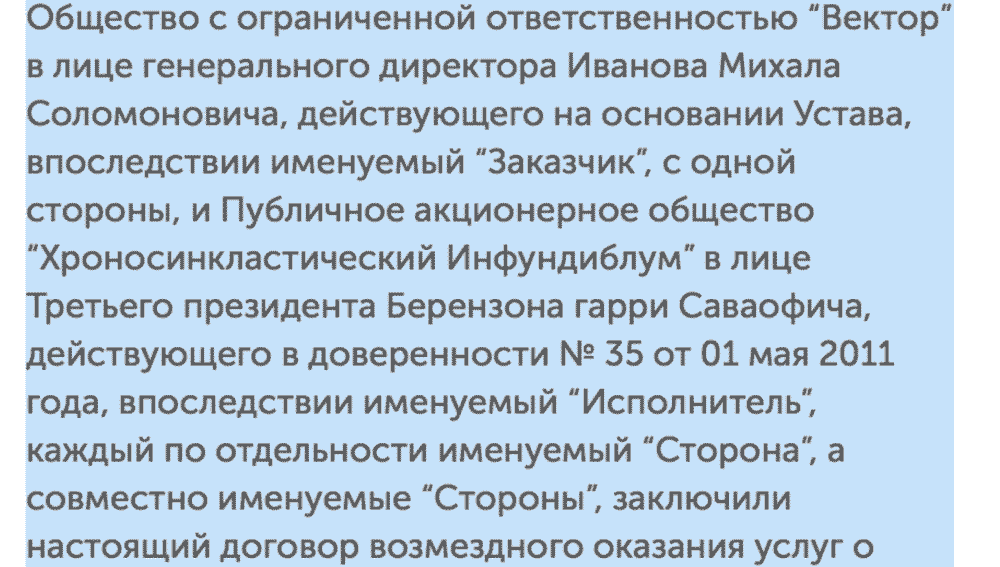

<!DOCTYPE HTML>
<html lang="ru">
<head>
    <meta charset="UTF-8">
    <meta name="viewport" content="width=device-width, initial-scale=1">

    <title>Принципы Центра</title>
    <style>
        .emerge{opacity:0}
    </style>

    <link href="/dist/main.min.css?ver=0.1" rel="stylesheet">

    <link href="https://fonts.googleapis.com/css?family=PT+Serif&amp;subset=latin,cyrillic" rel="stylesheet">

    <link rel="icon" type="image/png" href="dist/favicon.png">
    <link rel="alternate" hreflang="ru" href="https://useful.expert">
    <link rel="alternate" hreflang="en" href="https://en.useful.expert">
    <link rel="alternate" hreflang="el" href="https://el.useful.expert">

    <meta property="og:title" content="9 принципов крутого юриста">
    <meta property="og:type" content="article">
    <meta property="og:url" content="https://useful.expert/principles.html">
    <meta property="og:image" content="storage/social.png">
    <meta property="og:description" content="Мы работаем по&nbsp;этим принципам с 2012 года. Теперь мы делимся ими с&nbsp;вами. Мы хотим, чтобы как можно больше людей узнали, как должен работать крутой юрист.">
    <meta property="og:site_name" content="Центр управления законом">

    <meta name="twitter:card" content="summary_large_image">
    <meta name="twitter:site" content="@nepofigist">
    <meta name="twitter:creator" content="@nepofigist">
    <meta name="twitter:title" content="9 принципов крутого юриста">
    <meta name="twitter:description" content="Мы работаем по&nbsp;этим принципам с 2012 года. Теперь мы делимся ими с&nbsp;вами. Мы хотим, чтобы как можно больше людей узнали, как должен работать крутой юрист.">
    <meta name="twitter:image:src" content="storage/social.png">
</head>
<body>
<div class="wrap">
    <div class="section">
        <div class="grid top-panel">
            <div class="grid__item grid__item--14 grid_sm_40 top-panel__head">
                <a class="logo" href="index.html">Useful<br/>Services</a>
                <!-- menu:start -->
                <input id="menu__toggle" type="checkbox" />
                <label class="menu__btn" for="menu__toggle">
                    <span></span>
                </label>
                <ul class="top-menu menu__box">
                    <li class="top-menu__item"><a href="index.html">Услуги</a></li>
                    <li class="top-menu__item">Принципы</li>
                    <li class="top-menu__item"><a href="articles.html">Знания</a></li>
                    <li class="top-menu__item"><a href="documents.html">Документы</a></li>
                </ul>
            </div>
            <div class="grid__item grid__item--4 grid_sm_40 top-contacts">
                <span class="top-contacts__email">
                    <a href="mailto:mail@outlaw.center">mail@outlaw.center</a>
                </span>
            </div>
        </div>
    </div>

    <div class="section">
        <div class="principle-title">
            <span class="principle-title__icon principle-title__icon--1"></span>

            <span class="principle-title__icon principle-title__icon--2"></span>

            <span class="principle-title__icon principle-title__icon--3"></span>

            <span class="principle-title__icon principle-title__icon--4"></span>

            <span class="principle-title__icon principle-title__icon--5"></span>

            <span class="principle-title__icon principle-title__icon--6"></span>

            <span class="principle-title__icon principle-title__icon--8"></span>

            <span class="principle-title__icon principle-title__icon--9"></span>

            <h1 class="principle-title__head">Принципы крутого юриста</h1>

            <p>Стереотипов о&nbsp;работе юриста много. Кажется, будто юрист только
                штампует документы, воюет в&nbsp;суде, добавляет в&nbsp;договорах мелкий
                текст под звёздочкой и&nbsp;вообще мешает работать. На&nbsp;самом деле
                это не&nbsp;так.</p>

            <p class="principle-title__colored">
                <span class="principle-title__span1">Юрист защищает</span>

                <span class="principle-title__span2">интересы клиента</span>
            </p>

            <p>Чтобы заменить плохие стереотипы о&nbsp;юристах на&nbsp;хорошие,
                мы&nbsp;публикуем принципы крутого юриста. Принципы расскажут, зачем
                нужен юрист<br/>и&nbsp;как он&nbsp;работает.</p>
        </div>
    </div>


    <div class="section">
        <div class="principles">
            <span class="principles__support">Поддержать принципы</span>

            <div class="principles__item" id="principle1">
                <span class="principles__placeholder">Первый принцип. Крутой юрист управляет рисками</span>

                <div class="principles__card">
                    <div class="principles__contain">

                        <div class="principle1">
                            <div class="principle1__number-contain">
                                <span class="principle1__number"></span>

                                <div class="principle1__aside">
                                    <p>Пример таблицы с&nbsp;обзором рисков <a href="https://docs.google.com/document/d/1N5g7j6JTowbJpNi4YQQaFZRiSdCErxTkaHcqnYRTpRY/edit#heading=h.e09anpxytqix">в&nbsp;Гугль-доке</a></p>
                                </div>
                            </div>

                            <div class="principle1__text">
                                <div class="principle1__text-sweep">
                                    <h2 class="principle1__head"><span class="principles__number__text">1.</span> Крутой юрист управляет рисками</h2>

                                    <p>Неопытный юрист защищает от&nbsp;всех рисков без&nbsp;разбора. Ему
                                        проще запретить, чем разобраться. В&nbsp;итоге бизнес тратит
                                        деньги и&nbsp;время, а&nbsp;взамен получает бесполезные
                                        и&nbsp;грузные документы.</p>

                                    <p>Юрист &laquo;Центра&raquo; управляет рисками. Первым делом
                                        разбирается в&nbsp;бизнесе, а&nbsp;затем сортирует риски
                                        по&nbsp;вероятности возникновения и&nbsp;вреду.</p>

                                    <table class="principle1__list">
                                        <tr>
                                            <td class="principle1__colored">Опасные и&nbsp;вероятные</td>

                                            <td>Уничтожаем любой ценой</td>
                                        </tr>

                                        <tr>
                                            <td class="principle1__colored">Опасные и&nbsp;маловероятные,
                                                неопасные и&nbsp;вероятные</td>

                                            <td>Используем как повод для торга на&nbsp;переговорах
                                                с&nbsp;контрагентом</td>
                                        </tr>

                                        <tr>
                                            <td class="principle1__colored">Неопасные
                                                и&nbsp;маловероятные</td>

                                            <td>Игнорируем, если сделка полезнее</td>
                                        </tr>
                                    </table>

                                </div>
                                <p>Анализ рисков помогает юристу спланировать проект
                                    и&nbsp;договориться с&nbsp;клиентом о&nbsp;направлении работы.</p>
                            </div>
                        </div>
                    </div>
                </div>
            </div>


            <div class="principles__item" id="principle2">
                <span class="principles__placeholder">Второй ринцип. Крутой юрист заботится о&nbsp;пользе</span>

                <div class="principles__card">
                    <div class="principles__contain">
                        <div class="principle2">
                            <div class="principle2__number-contain">
                                <span class="principle2__number"></span>
                            </div>

                            <div class="principle2__contain">
                                <h2 class="principle2__head"><span class="principles__number__text">2.</span> Крутой юрист заботится о&nbsp;пользе</h2>

                                <div class="principle2__text">
                                    <p>Юрист защищает интересы бизнеса с&nbsp;помощью юридических
                                        решений. Польза защиты&nbsp;&mdash; в&nbsp;экономии времени,
                                        денег и&nbsp;сил клиента. Юрист вредит клиенту, если внедряет
                                        решение без&nbsp;оглядки на&nbsp;пользу.</p>

                                    <p>Поэтому юрист &laquo;Центра&raquo; берётся за&nbsp;задачу только,
                                        если понял, в&nbsp;чём польза. Юрист выясняет, что именно хочет
                                        клиент, перепроверяет документы и&nbsp;процессы внутри компании.
                                        Выбирает решение, исходя из&nbsp;того, что важнее и&nbsp;полезнее
                                        для клиента.

                                        <span class="principle2__aside principle2__aside--right">Если клиент пришёл
                      не&nbsp;с&nbsp;задачей, а&nbsp;с&nbsp;ощущением, что что-то
                      не&nbsp;так, юрист проверит бизнес и&nbsp;найдёт слабые места.
                      Если всё в&nbsp;порядке, пугать не&nbsp;будет.</span>
                                    </p>

                                    <p class="principle2__example">
                    <span class="principle2__colored">Дешевле обучить
                      менеджеров,</span><br />чем разработать универсальный
                                        договор.</p>

                                    <p class="principle2__example">
                    <span class="principle2__colored">Проще договориться с&nbsp;клиентом, </span><br />чем писать претензию.</p>

                                    <p class="principle2__example">
                                    <span class="principle2__colored">Дешеле изменить только спорные
                                      пункты,</span><br />чем переписывать весь документ.</p>

                                    <p>Чтобы быстрее принести пользу, юрист использует проверенные
                                        решения из&nbsp;прошлых проектов.

                                        <span class="principle2__aside">
                                          <span class="g-link g-quote-link" id="principle2-link">«<span>Крутой юрист борется
                                            с&nbsp;рутиной</span>»</span></span>
                                    </p>

                                    <span class="principle2__aside principle2__aside--left">
                                        <span class="principle2__tasks">13</span>
                                        <span class="principle2__colored">Из четырнадцати задач</span>
                                        решаются без&nbsp;юриста
                                      </span>
                                </div>
                            </div>
                        </div>
                    </div>
                </div>
            </div>


            <div class="principles__item" id="principle3">
                <span class="principles__placeholder">Третий принцип. Крутой юрист уменьшает бюрократию</span>

                <div class="principles__card">
                    <div class="principles__contain">
                        <div class="principle3">
                            <div class="principle3__aside">
                                <div class="principle3__number-contain">
                                    <span class="principle3__number"></span>
                                </div>

                                <div class="principle3__bordered">
                                    
                                </div>

                                <div class="principle3__example">Пример редактуры документа</div>
                            </div>

                            <div class="principle3__contain">
                                <h2 class="principle3__head"><span class="principles__number__text">3.</span> Крутой юрист уменьшает<br />бюрократию</h2>

                                <div class="principle3__text">
                                    <p>Согласование договоров и&nbsp;длинные
                                        бизнес-процессы&nbsp;&mdash; пустая трата денег. Вместо того,
                                        чтобы умножать прибыль клиент тратит время на&nbsp;совещания
                                        и&nbsp;бумаги. Чем проще документы и&nbsp;процессы, тем проще
                                        договориться с&nbsp;контрагентами.</p>

                                    <p>Поэтому юрист &laquo;Центра&raquo; пишет документы
                                        в&nbsp;информационном стиле. Облегчает грузные формулировки,
                                        убирает лишние пункты и&nbsp;не&nbsp;повторяет одно
                                        и&nbsp;то&nbsp;же несколько раз. В&nbsp;таких документах сложнее
                                        запутаться и&nbsp;проще уловить суть.</p>

                                    <p>Может показаться, что упрощение формулировок вредит безопасности.
                                        Мы&nbsp;считаем, что наоборот: чем больше воды
                                        в&nbsp;документе, тем сложнее понять смысл. Договор бесполезен,
                                        если каждый понимает его по-своему.</p>
                                </div>
                            </div>
                        </div>
                    </div>
                </div>
            </div>


            <div class="principles__item" id="principle4">
                <span class="principles__placeholder">Четвертый принцип. Крутой юрист хранит секреты</span>

                <div class="principles__card">
                    <div class="principles__contain">
                        <div class="principle4">
                            <div class="principle4__number-contain">
                                <span class="principle4__number"></span>
                                <div class="principle4__aside">Сейчас с&nbsp;«Центром» одновременно работают два конкурента из&nbsp;одной отрасли</div>
                            </div>

                            <div class="principle4__contain">
                                <h2 class="principle4__head"><span class="principles__number__text">4.</span> Крутой юрист хранит секреты</h2>

                                <div class="principle4__text">
                                    <div class="principle1__text-sweep">
                                        <p>Разбалтывать чужие секреты запрещено&nbsp;&mdash; бизнес
                                            приходит к&nbsp;юристу за&nbsp;защитой. Юрист поставит интересы
                                            бизнеса под угрозу, если сболтнёт лишнего.</p>

                                        <p>Юрист &laquo;Центра&raquo; относится к&nbsp;секретам клиента,
                                            как к&nbsp;своим. Присылает готовые документы только клиенту
                                            и&nbsp;следит, чтобы в&nbsp;переписке не&nbsp;было лишних
                                            людей.</p>

                                        <p>Компания не&nbsp;боится прийти в&nbsp;&laquo;Центр&raquo;,
                                            если &laquo;Центр&raquo; уже работает
                                            с&nbsp;её&nbsp;конкурентами. Потому что юрист держит язык
                                            за&nbsp;зубами.</p>
                                    </div>
                                </div>
                            </div>
                        </div>
                    </div>
                </div>
            </div>


            <div class="principles__item" id="principle5">
        <span class="principles__placeholder">Пятый принцип. Крутой юрист экономит
          время</span>

                <div class="principles__card">
                    <div class="principles__contain">
                        <div class="principle5">
                            <div class="principle5__number-contain">
                                <span class="principle5__number"></span>
                            </div>

                            <div class="principle5__contain">
                                <h2 class="principle5__head"><span class="principles__number__text">5.</span> Крутой юрист экономит время</h2>

                                <div class="principle5__text">
                                    <p>Клиент нанимает юриста, чтобы тратить меньше времени
                                        на&nbsp;документы и&nbsp;больше на&nbsp;бизнес. Крутой юрист ценит
                                        время клиента. Чем больше юрист экономит времени, тем лучше
                                        клиенту.</p>

                                    <p>Юрист &laquo;Центра&raquo;&nbsp;&mdash; человек-оркестр. Работает
                                        с&nbsp;сотрудниками компании напрямую, сам следит
                                        за&nbsp;изменениями в&nbsp;бизнесе и&nbsp;обновляет решения.
                                        Это&nbsp;помогает клиенту уделять больше времени бизнесу
                                        и&nbsp;меньше менеджменту.

                                        <span class="principle5__aside principle5__aside--right">Юрист сам планирует работу,
                      оценивает риски и&nbsp;согласовывает документы.</span>
                                    </p>

                                    <p>Крутой юрист не&nbsp;боится быть самостоятельным, потому что
                                        детально изучил бизнес клиента.</p>

                                    <span class="principle5__aside principle5__aside--left">
                    <span class="principle5__tasks">3</span>
                    <span class="principle5__colored">часа работы юриста</span>
                    экономят 9 часов работы клиента
                  </span>
                                </div>
                            </div>
                        </div>
                    </div>
                </div>
            </div>


            <div class="principles__item" id="principle6">
        <span class="principles__placeholder">Шестой принцип. Крутой юрист соблюдает
          сроки</span>

                <div class="principles__card">
                    <div class="principles__contain">
                        <div class="principle6">
                            <div class="principle6__aside">
                                <div class="principle6__number-contain">
                                    <span class="principle6__number"></span>
                                </div>

                                <p class="principle6__links">
                                    <a href="http://artgorbunov.ru/bureau/fff/">О&nbsp;том, как планировать работу</a><br />на&nbsp;сайте
                                    бюро Артёма Горбунова</p>
                            </div>

                            <div class="principle6__contain">
                                <h2 class="principle6__head"><span class="principles__number__text">6.</span> Крутой юрист соблюдает сроки</h2>

                                <div class="principle6__text">
                                    <p>Крутой юрист понимает, что проваленные сроки вредят бизнесу.
                                        Поэтому юрист сдаёт задачи в&nbsp;срок. Это&nbsp;помогает клиенту
                                        планировать работу на&nbsp;несколько шагов вперёд
                                        и&nbsp;не&nbsp;бояться подвижек.</p>

                                    <p>Чтобы сдать в&nbsp;срок, юрист &laquo;Центра&raquo; внимательно
                                        изучает задачи и&nbsp;разбивает работу на&nbsp;итерации.
                                        Не&nbsp;планирует впритык и&nbsp;всегда оставляет запас времени.
                                        Сначала собирает общее решение, затем каждую итерацию шлифует
                                        детали.</p>
                                </div>
                            </div>
                        </div>
                    </div>
                </div>
            </div>


            <div class="principles__item" id="principle7">
        <span class="principles__placeholder">Седьмой принцип. Крутой юрист борется
          с&nbsp;рутиной</span>

                <div class="principles__card">
                    <div class="principles__contain">

                        <div class="principle7">
                            <div class="principle7__number-contain">
                                <span class="principle7__number"></span>
                            </div>

                            <div class="principle7__text">
                                <div class="principle7__text-sweep">
                                    <h2 class="principle7__head"><span class="principles__number__text">7.</span> Крутой юрист борется с&nbsp;рутиной</h2>

                                    <p>Крутой юрист понимает, что рутина&nbsp;&mdash; бесполезная трата времени, потому что она мешает работать.</p>

                                    <p>Лучше написать договор за&nbsp;два дня, чем за&nbsp;десять, если это не&nbsp;вредит безопасности. Разницу во&nbsp;времени клиент или менеджер потратит на&nbsp;другие задачи.</p>

                                    <p>Как юрист «Центра» борется с&nbsp;рутиной:</p>
                                </div>
                            </div>

                            <ul class="principle7__items">
                                <li class="principle7__item">
                                    <span class="principle7__colored">Создаёт модульные документы,</span>
                                    чтобы быстро адаптировать под&nbsp;разные виды задач.
                                </li>

                                <li class="principle7__item">
                  <span class="principle7__colored">Вводят электронный
                  документооборот:</span> чтобы подписывать документы через интернет.
                                </li>

                                <li class="principle7__item">
                  <span class="principle7__colored">Заменяют договоры
                  на&nbsp;оферты,</span> чтобы менеджеры не&nbsp;тратили время
                                    на&nbsp;бумажную волокиту.
                                </li>

                                <li class="principle7__item">
                  <span class="principle7__colored">Применяет решения из&nbsp;прошлых
                  проектов,</span><br class="grid_xs_0" /> чтобы быстрее собрать рабочий вариант.
                                </li>
                            </ul>
                        </div>
                    </div>
                </div>
            </div>


            <div class="principles__item" id="principle8">
        <span class="principles__placeholder">Восьмой принцип. Крутой юрист ускоряет
          работу</span>

                <div class="principles__card">
                    <div class="principles__contain">
                        <div class="principle8">
                            <div class="principle8__number-contain">
                                <span class="principle8__number"></span>
                            </div>

                            <div class="principle8__contain">
                                <h2 class="principle8__head"><span class="principles__number__text">8.</span> Крутой юрист ускоряет работу</h2>

                                <div class="principle8__text">
                                    <p>Если документы, переписка и&nbsp;задачи хранятся где попало,
                                        клиенту приходится тратить время и&nbsp;силы на&nbsp;поиск. Крутой
                                        юрист понимает, что порядок в&nbsp;проектах экономит время
                                        клиента. Поэтому юрист сам организовывает проект и&nbsp;помогает
                                        клиенту разобраться в&nbsp;системе.</p>

                                    <p>Юрист «Центра» наводит порядок с&nbsp;помощью технологий. </p>
                                </div>
                            </div>

                            <div class="principle8__rel">
                                <div class="principle8__tabs">
                                    <span class="principle8__tab principle8__tab--active" data-anchor="principle8-trello">Трелло</span>
                                    <span class="principle8__tab" data-anchor="principle8-gdoc">Гугль-диск</span>
                                    <span class="principle8__tab" data-anchor="principle8-slack">Слак</span>
                                </div>
                            </div>

                            <div class="principle8__screens">
                                <div class="principle8__screen principle8__screen--trello principle8__screen--active" id="principle8-trello">
                                    <div class="principle8__screen-preview">
                                        
                                    </div>

                                    <div class="principle8__screen-content">
                                        <h3 class="principle8__title">Планирует работу и&nbsp;ведёт задачи
                                            в&nbsp;«Трелло»</h3>

                                        <p>В «Трелло» клиент и&nbsp;юрист не&nbsp;тратят время на&nbsp;обсуждение
                                            хода работ&nbsp;— история переписки, задачи и&nbsp;прогресс
                                            лежат на&nbsp;доске с&nbsp;проектом.</p>

                                        <p>«Трелло» работает на&nbsp;любом устройстве с&nbsp;интернетом,
                                            сортирует задачи по&nbsp;направлениям и&nbsp;стадиям проработки
                                            и&nbsp;хранит заготовки для&nbsp;плана. Юрист быстрее планирует
                                            работу.</p>

                                        <div class="principle8__screen-aside">
                                            Планирование задач в&nbsp;«Трелло»
                                        </div>
                                    </div>
                                </div>

                                <div class="principle8__screen principle8__screen--gdoc" id="principle8-gdoc">
                                    <div class="principle8__screen-preview">
                                        
                                    </div>

                                    <div class="principle8__screen-content">
                                        <h3 class="principle8__title">Хранит последние версии документов в&nbsp;облаке «Гугля»</h3>

                                        <p>С «Гугль-диском» клиент не&nbsp;ищет файл в&nbsp;переписке или на&nbsp;флешке,
                                            а&nbsp;просто открывает документ из&nbsp;общей папки.</p>

                                        <p>«Гугль-диск» работает на&nbsp;любом устройстве
                                            с&nbsp;интернетом, хранит копии документов и&nbsp;ведёт историю
                                            исправлений. Юрист и&nbsp;клиент уверены, что ничего
                                            не&nbsp;потеряется.</p>

                                        <div class="principle8__screen-aside">
                                            Организация проекта в&nbsp;«Гугль-диске»
                                        </div>
                                    </div>
                                </div>

                                <div class="principle8__screen principle8__screen--slack" id="principle8-slack">
                                    <div class="principle8__screen-preview">
                                        
                                    </div>

                                    <div class="principle8__screen-content">
                                        <h3 class="principle8__title">Переписывается с&nbsp;коллегами
                                            и&nbsp;клиентами в&nbsp;«Слаке»</h3>

                                        <p>В «Слаке» клиент знает, куда обратиться за помощью,
                                            а&nbsp;юристы&nbsp;&mdash; где искать информацию
                                            о&nbsp;проекте.</p>

                                        <p>«Слак» работает, как экстренный канал для общения. Моментально
                                            синхронизирует сообщения, помогает сортировать переписку
                                            по&nbsp;темам и&nbsp;запускается на&nbsp;любом устройстве.</p>

                                        <div class="principle8__screen-aside">
                                            Пример обсуждения проекта в&nbsp;«Слаке»
                                        </div>
                                    </div>
                                </div>
                            </div>
                        </div>
                    </div>
                </div>
            </div>


            <div class="principles__item" id="principle9">
        <span class="principles__placeholder">Девятый принцип. Крутой юрист знает: судиться&nbsp;— отстой</span>

                <div class="principles__card">
                    <div class="principles__contain">
                        <div class="principle9">
                            <div class="principle9__aside">
                                <div class="principle9__number-contain">
                                    <span class="principle9__number"></span>
                                </div>
                            </div>

                            <div class="principle9__contain">
                                <h2 class="principle9__head"><span class="principles__number__text">9.</span> Крутой юрист знает: судиться&nbsp;— отстой</h2>

                                <div class="principle9__text">
                                    <p>Крутой юрист старается обойтись без судебных процессов. Суды
                                        редко дают запланированный результат, но&nbsp;гарантированно
                                        тратят время и&nbsp;деньги. Лучше сохранить хорошие отношения,
                                        чем идти в&nbsp;суд.</p>

                                    <p>Поэтому юрист &laquo;Центра&raquo; помогает бизнесу разобраться
                                        с&nbsp;претензиями сразу после их&nbsp;появления. Для этого юрист
                                        связывается с&nbsp;клиентом бизнеса и&nbsp;уточняет проблему.</p>

                                    <p>Юрист общается с&nbsp;клиентами вежливо и&nbsp;деликатно, проявляет
                                        заботу и&nbsp;понимание. Ищет решение, если интересы клиента идут
                                        вразрез с&nbsp;интересами бизнеса.</p>

                                    <span class="principle9__aside principle9__aside--left">
                    <span class="principle9__tasks">82</span>
                    <span class="principle9__colored">Из восьмидесяти четырёх</span>
                    споров решено досудебно
                  </span>
                                </div>
                            </div>
                        </div>
                    </div>
                </div>
            </div>


            <div class="support-principle" id="support-principle">
                <div class="support-principle__contain">
                    <h2 class="support-principle__head">Поддержать принципы</h2>

                    <div class="support-principle__desc">
                        <p>Мы&nbsp;работаем по этим принципам с&nbsp;2012&nbsp;года.
                            Теперь мы&nbsp;делимся ими с&nbsp;вами. Мы&nbsp;хотим, чтобы как можно
                            больше людей узнали, как должен работать крутой юрист.</p>

                        <p>Расскажите друзьям и знакомым, если вы согласны.</p>

                        <div class="likely likely--support-principle">
                            <div class="twitter">Твитнуть</div>
                            <div class="facebook">Поделиться</div>
                            <div class="vkontakte">Рассказать</div>
                        </div>
                    </div>

                    <div class="support-principle__mail">
                        Если знаете, как сделать принципы круче, пишите:
                        <a href="mailto:mail@outlawcenter.ru">mail@outlawcenter.ru</a>
                    </div>
                </div>
            </div>

        </div>
    </div>


    <div class="section" style="display: none">
        <div class="grid">
            <div class="grid__item" style="height: 50px; background-color: #ac6060"></div>
            <div class="grid__item" style="height: 50px; background-color: #a12f2f"></div>
            <div class="grid__item" style="height: 50px; background-color: #c3903a"></div>
            <div class="grid__item" style="height: 50px; background-color: #5ba24d"></div>
            <div class="grid__item" style="height: 50px; background-color: #24aa6e"></div>
            <div class="grid__item" style="height: 50px; background-color: #a15e5e"></div>
            <div class="grid__item" style="height: 50px; background-color: #324e8e"></div>
            <div class="grid__item" style="height: 50px; background-color: #87489d"></div>
            <div class="grid__item" style="height: 50px; background-color: #40b99f"></div>
            <div class="grid__item" style="height: 50px; background-color: #c3903a"></div>
            <div class="grid__item" style="height: 50px; background-color: #5ba24d"></div>
            <div class="grid__item" style="height: 50px; background-color: #24aa6e"></div>
            <div class="grid__item" style="height: 50px; background-color: #a15e5e"></div>
            <div class="grid__item" style="height: 50px; background-color: #324e8e"></div>
            <div class="grid__item" style="height: 50px; background-color: #87489d"></div>
            <div class="grid__item" style="height: 50px; background-color: #40b99f"></div>
            <div class="grid__item" style="height: 50px; background-color: #ac6060"></div>
            <div class="grid__item" style="height: 50px; background-color: #a12f2f"></div>
        </div>
    </div>
</div>

<div class="section">
    <div class="footer grid">
        <div class="grid__item grid__item--8 grid_sm_60">
            <span class="footer__row">© 2016–2022, Useful Services Pte. Ltd.</span>
            <span class="footer__row footer__address">68 Circular Road, #02-01, 049422, Singapore</span>
        </div>
        <div class="grid__item grid__item--6 grid_sm_40">
        <span class="footer__row">
            <a href="mailto:mail@outlaw.center" target="_blank">mail@outlaw.center</a>
        </span>
        </div>
        <div class="grid__item grid__item--4 m_t_sm_23 grid_sm_100">
            <span class="footer__row"><a href="http://yumadilov.com" target="_blank">Не слабо</a></span>
            <span class="footer__row footer__dev__utp">задизайнить и запустить</span>
        </div>
    </div>
</div>
<!-- -->
<script type="text/javascript" src="https://cdn.weglot.com/weglot.min.js"></script>
<script>
    Weglot.initialize({
        api_key: 'wg_2912f6a090f8c5a1dc8b6511d94a449a5'
    });
</script>
<script type="text/javascript">
    <!--
    //for(var head=document.getElementsByTagName("head")[0],linkHrefRuleG=/href\s*=\s*(\"|\')([^\"\']*)(\"|\')/gim,linkHrefRule=/href\s*=\s*(\"|\')([^\"\']*)(\"|\')/i,links=head.getElementsByTagName("noscript")[0].innerHTML.match(linkHrefRuleG),linkHref,link,i=0;i<links.length;i+=1)linkHref=links[i].match(linkHrefRule),link=document.createElement("link"),link.setAttribute("href",linkHref[2]),link.setAttribute("rel","stylesheet"),head.appendChild(link);
    //-->
</script>
<script src="/dist/vendor.min.js"></script>
<script src="/dist/bundler.js?ver=0.1"></script>
<!-- Yandex.Metrika counter -->
<script type="text/javascript" >
    (function(m,e,t,r,i,k,a){m[i]=m[i]||function(){(m[i].a=m[i].a||[]).push(arguments)};
        m[i].l=1*new Date();k=e.createElement(t),a=e.getElementsByTagName(t)[0],k.async=1,k.src=r,a.parentNode.insertBefore(k,a)})
    (window, document, "script", "https://mc.yandex.ru/metrika/tag.js", "ym");

    ym(83141422, "init", {
        clickmap:true,
        trackLinks:true,
        accurateTrackBounce:true
    });
</script>
<noscript><div></div></noscript>
<!-- /Yandex.Metrika counter -->
</body>
</html>